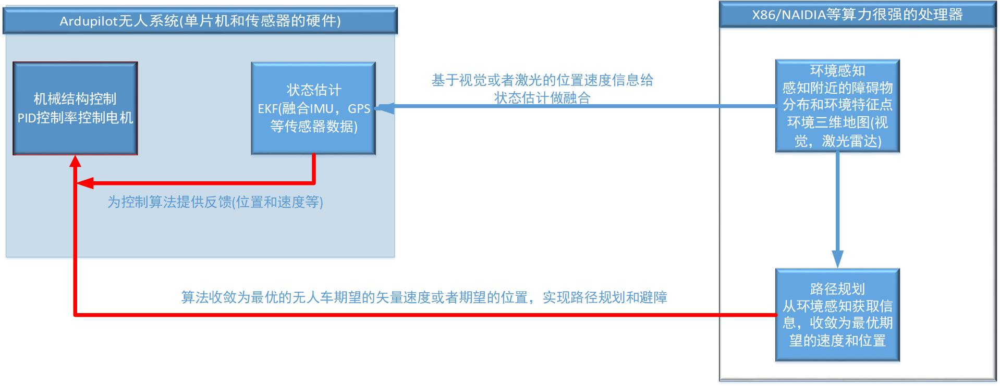
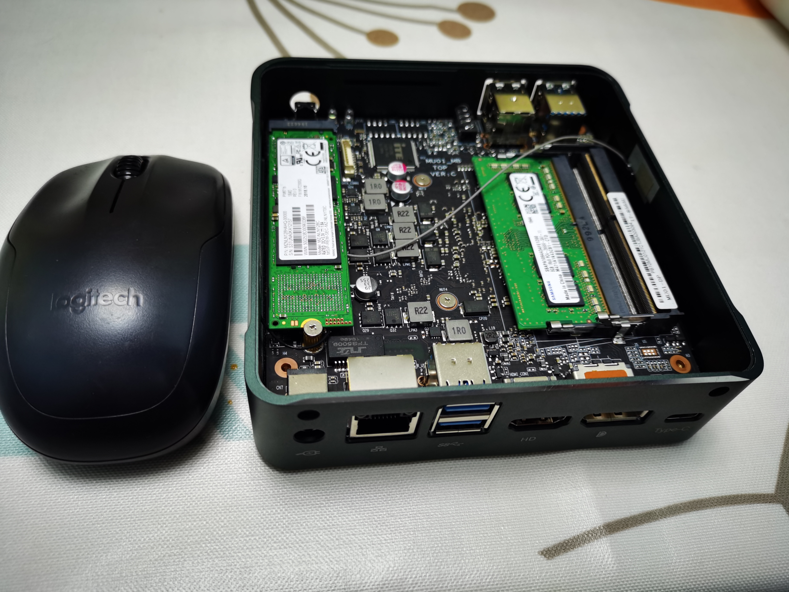
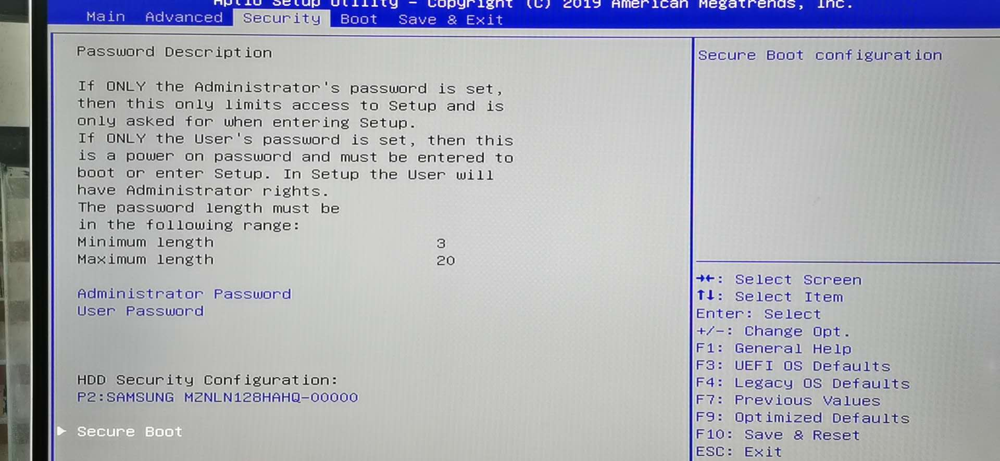
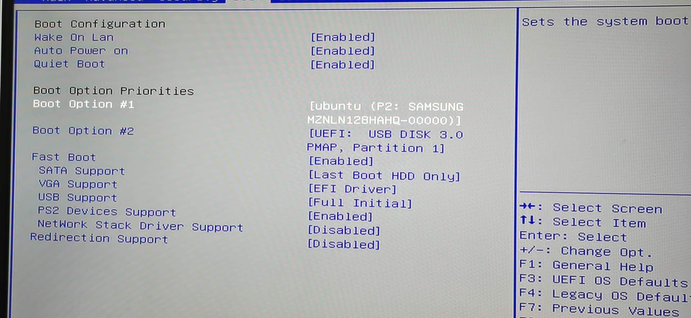
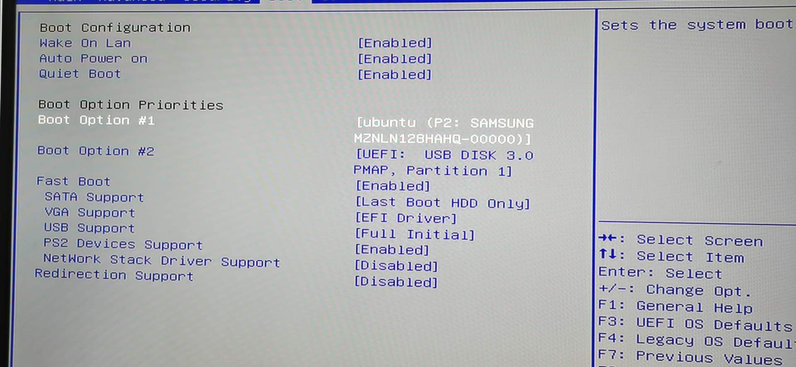
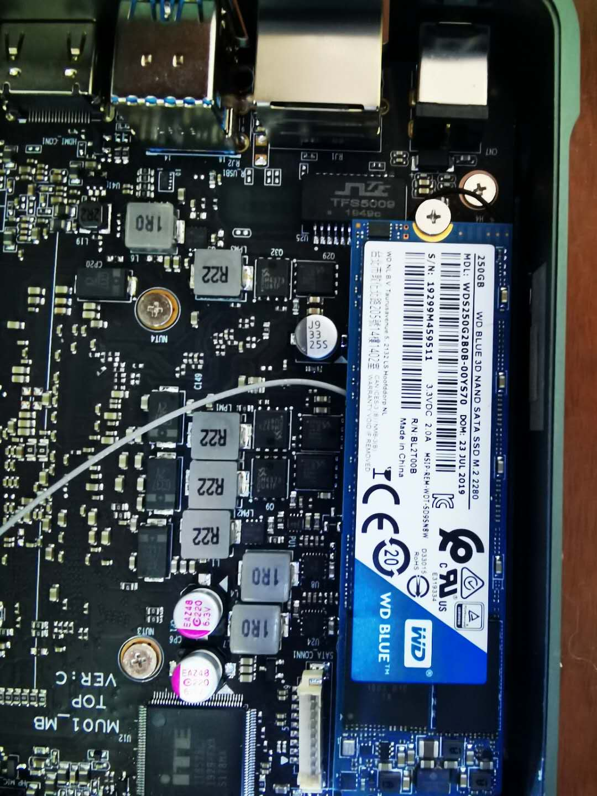
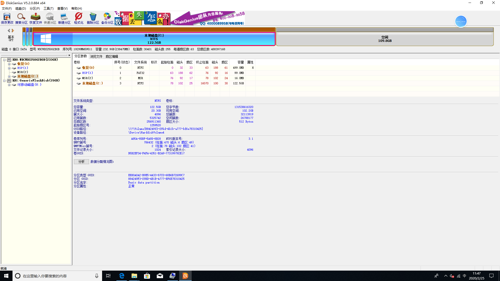
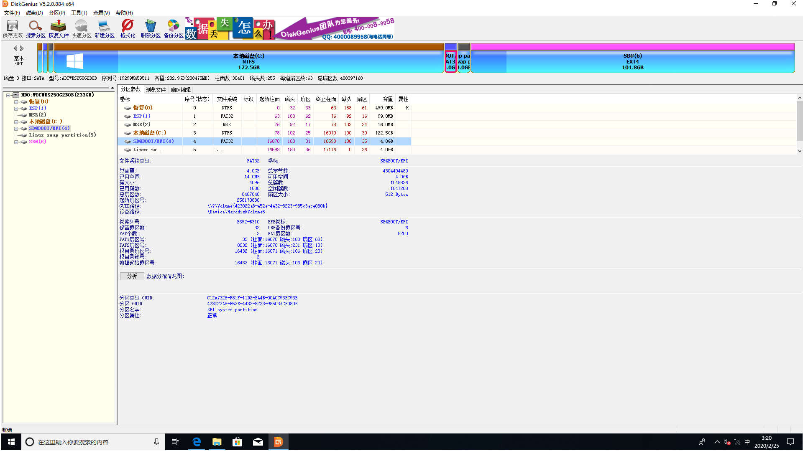

仿真系统软件硬件框架及其系统安装¶
1.1 系统概述¶
下面是这个无人车真开发的软件框架图，要理解这个软件框架图，要会ROS，有Gazebo使用经验，同时对Ardupilot软件框架有所理解，三维的软件仿真是利用了三维引擎(ORGE)， 模拟出了无人车上的所有传感器设备，并且发布出了原始数据，交给了sim_vehicle.py这个Ardupilot软件仿真模块，sim_vehicle.py相当于在PC上运行的Ardupilot代码，区别在于单片机运行的Ardupilot代码传感器数据来自于真实的传感器数据， sim_vehicle.py的传感器数据来自于软件仿真生成的。
Ardupilot 无人系统具备完善的功能，从数据链路，到地面站，主控硬件，和丰富可选的硬件设备，激光雷达，RTK等等。开源网站如下：https://ardupilot.org/ 有详细介绍.

他不是一个仅仅只是应用在实验场合，在无人机领域，在小型测量船领域都有大量工业应用案例。相比其他工业设备的价格高，Ardupilot 无人系统成本可控，外设传感器搭配灵活，可以实现不同功能。 目前这套构架体系比较适合于小型物流无人车，在特定园区内部的运行，比如京东的无人物流车，美团的无人物流车，农业撒农药的无人车等等，大型的沙滩车也有一些改装案例，还有一些无人船等等。硬件成本相对价格比较低， 软件框架扩展性比较好，在无人车的状态估计方面代码相对比较完善，视觉传感器设备也做到了一定程度的融合。路径规划方向和ROS接口做的也比较完善，ROS上面一些包可以直接用起来。
同时我们提供了把所有开发环境都安装好的ISO环境，Ardupilot固件编译环境，ROS的系统环境，激光SLAM的代码工具环境等一些必要的工具，省去大家安装环境的问题，有些环境的安装非常麻烦， 很多初学者因为安装环境的繁琐，耗费大量时间。这个ISO环境可以虚拟机安装，可以物理机安装，如果电脑的硬件配置一般的话没有显卡，推荐安装在物理机上，这个ISO镜像也可以安装双系统，但是不推荐安装在虚拟机上。
关于课程：我们在制作这个课程的时候希望可以尽可能的降低研发的难度，包括硬件投入和软件开发的难度。只要有一台硬件配置还不错的电脑，就可以入手开发工作。会一些C/C ++ 语言，Python语言，懂一些ROS就可以 着手与无人车的开发工作。我们想帮助更多的开发着加入到无人系统的开发工作中来，促进行业的发展。
我们先从仿真入手，所有的例程都尽量配合三维仿真。无人系统开发三大方向：机构控制，环境感知，路径规划。这三大部分我们的无人车系统中都会涉及到，也都会有对应的仿真。核心的理念是即便没有真实的无人车硬件设备 也可以入手开发工作。仿真开发和真实无人车的算法开发可以无缝衔接。底层控制，传感器，三维仿真模块相互分离。

1.2 软件构架¶

其中的虚拟引擎技术，广泛用于游戏，可以模拟出一些真是环境的物理参数，比如光照，力学等。逐步用到无人系统开发的领域，目前无人车和无人机领域都大量用到了三维仿真，用于开发，缩短开发时间和提高开发效率。 ROS作为流行的机器人开发平台，同时配合Gazebo仿真环境。Ardupilot也专门提供了在ubuntu环境用运行的模拟控制器sim_vehicle.py。
下面从安装一个仿真系统环境开始介绍：
1.3 硬件要求¶
- 1 硬件配置尽可能高的PC一台，有无显卡均可，CPU最好4核8线程，安装固态硬盘(128G)就够了，内存8G以上(仿真软件比较耗费内存)。目前我们以英特尔的i7-8565U，是一个低压笔记本 CUP 八代i7,X86构架。整体重量也控制在400g左右，可用用来三维仿真，安装开发环境，也可以直接安装在大轴距的无人机或者无人车上。

其他的笔记本，台式机都可以，如果要做复杂的大场景三维仿真，还是建议配置一个具有1080显卡的台式电脑，做三维视觉的仿真回比较好。
- 2 下载我们提供的ISO镜像和烧写工具软件，rufus-3.6这是制作系统U盘的工具。
- 3 一个8GB以上的U盘作为启动盘。
- 4 下载我们的ISO安装镜像。地址如下：
1.4 启动盘制作¶
- 制作系统启动U盘：
- 准备好系统烧写软件rufus-3.6和ISO系统镜像Ubuntu8.04.ISO。按照如下步骤开始烧写
- 打开系统烧写软件rufus,配置如下：
- 点击确定
- 选择以ISO镜像烧录
- 烧录完毕后

1.5 物理机单系统系统安装¶
制作好系统启动盘以后，开始安装这个ISO镜像。和普通的U盘装机类似，设置系统从U盘启动，安装Ubuntu系统。安装双系统目前没有尝试过，我们是在一台电脑上直接安装了这个ISO镜像。如果把BIOS的Fast Boot取消，说不定可以安装成功。
 



保存并且退出，选择系统安装。

安装系统，设置好系统分区，安装图片所示。

以上的是安装好的系统界面，这个系统预先安装好了ROS，Px4的编译环境，Gazebo等做仿真开发的必备软件，但是因为该ISO系统镜像不能大于4G的限制，我们在制作的时候删除了很多ubunut里面的预装软件， 浏览器等，只保留了必要软件，在使用之前要安装一些软件。
安装好之后，进入系统可以测试下环境，电脑密码是amov，进入终端：”cd ~/project/some/Firmware ” , 进入PX4源码目录输入：” make px4_sitl_default gazebo “。

可以看到如上的界面，说明初步编译通过，并且可以在gazebo看到一架无人机。在当前命令行里面输入”help”，可以看到目前支持的命令。输入:”commander arm”，可以解锁无人机，输入:”commander takeoff ” 无人机就可以初步飞起来。输入:” commander land” 无人机会降落下来。说明这个环境初步搭建完成，比较方便省去了繁琐环境搭建安装。
1.6 物理机双系统安装¶
同样是按照上面制作好的U盘系统盘，下面介绍如何安装双系统，准备一张256G硬盘，先安装好Win10系统，如何安装这里不多做描述，安装好Win10系统以后，在按照下面的步骤安装我们提供的Ubuntu镜像。 最好划分100G左右的硬盘给Ubuntu。
- 准备硬盘分区工具DiskGenius，提前给Ubuntu系统划分好系统分区。
准备了如下的硬盘：
250G的固态硬盘，M.2的硬盘，其他类型的硬盘和主板应该比较通用，这里不做一一尝试。有问题在论坛讨论区留言。
准备DiskGenius这个硬盘分区工具，在课程对应的软件目录里面有。
我们的用软件打开的系统分区如下：
先在原有的win10磁盘中划分了100G的空闲硬盘区给下一步ubuntu实用。
按照如上分区依次划分好EFI区(4GB)，SWAP区(8GB)，/目录区(EXT4 linux用户数据区)剩下的区。
EFI 分区划分如下:

另外两个分区类似，只不过类型和空间不同。三个分区划分完毕以后，点击保存。硬盘分区成功。关机断电，插上USB系统盘，进入系统安装界面，安装UBUNTU。
- 这个方式试用于大多数电脑，我们本次讲解用的M2接口的固态硬盘。更详细的安装步骤在视频讲解里面。